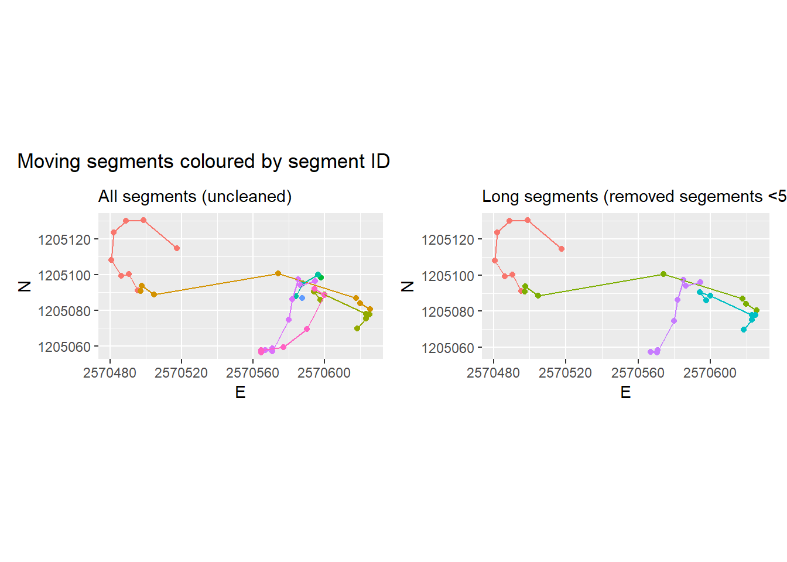

Exercise 3
Learning Outcomes
- You are able to segment a trajectory, e.g. using the approach proposed in Laube and Purves (2011)
- You are able to compute the similarity between given trajectories using the package
SimilarityMeasures. - You acquire further useful data processing skills.
Prerequisites
Readings Skills from “R for Data Science” (Wickham and Grolemund 2017):
- RS3.1 Chap1 Data visualization with
ggplot2(31, 3-35) - RS3.2 Chap5 Exploratory Data Analysis (28p, 81.109)
Readings Theory:
Alan Both (2018) A Comparative Analysis of Trajectory Similarity Measures: Recommendations for Selection and Use, excerpt from an unpublished manuscript, confidential.
Preperation
Install the following libraries:
## Preperation #################################################################
install.packages("SimilarityMeasures")
# The following packages are for optional tasks:
install.packages("plotly")
# You don't really need the following packages,
# we just use them in our figures
install.packages("ggrepel")Open your R Project from last week. Either run your own script from last week or the following lines to transform the data into the form we need for today’s exercise.
library(tidyverse)
library(sf)
# Import as dataframe
wildschwein_BE <- read_delim("00_Rawdata/wildschwein_BE.csv",",")
# Convert to sf-object
wildschwein_BE = st_as_sf(wildschwein_BE, coords = c("Long", "Lat"), crs = 4326,remove = FALSE)
# transform to CH1903 LV95
wildschwein_BE <- st_transform(wildschwein_BE, 2056)
# Add geometry as E/N integer Columns
wildschwein_BE <- st_coordinates(wildschwein_BE) %>%
cbind(wildschwein_BE,.) %>%
rename(E = X) %>%
rename(N = Y)
# Compute timelag, steplength and speed
wildschwein_BE <- wildschwein_BE %>%
group_by(TierID) %>%
mutate(
timelag = as.numeric(difftime(lead(DatetimeUTC),DatetimeUTC,units = "secs")),
steplength = sqrt((E-lead(E))^2+(N-lead(N))^2),
speed = steplength/timelag
)Tasks and Inputs
Input: Segmentation as in Laube and Purves (2011)
You’ve read Laube and Purves (2011) about segmenting trajectories. In the paper, the authors define “static” fixes as “those whose average Euclidean distance to other fixes inside a temporal window v is less than some threshold d,” as illustrated in the following figure:

The above image from Laube and Purves (2011) visualizes the following steps:
- Temporal representation of constant sample interval with associated temporal window v for three exemplary points;
- Measurement of average distance in temporal window v to sample points in spatial representation;
- Removal of all points where average distance is less than a given threshold, i.e. removal of static points; and
- Removal of subtrajectories with less than a threshold temporal length.
We will implement this method on the following dummy data. Once you’ve grasped the idea on this simple data, you will implement it for the wild boar data in task 1.
Note: I use tibble() instead of data.frame(). The two functions are very similar, this is just a matter of preference.
## Input: Segmentation #########################################################
set.seed(10)
n = 20
df <- tibble(X = cumsum(rnorm(n)), Y = cumsum(rnorm(n)))
ggplot(df, aes(X,Y)) +
geom_path() +
geom_point() +
coord_equal()
Segmenting
The first step is calculating the distances to temporally close samples within the temporal window v. Take the following sample data, assuming the sampling interval is 5 minutes. If we take a temporal window of 20 minutes, that would mean including 5 fixes. We need to calculate the following Euclidean distances (pos representing single location):
pos[n-2] topos[n]pos[n-1]topos[n]pos[n]topos[n+1]pos[n]topos[n+2]
Just like last week, we use the formular for calculating the Euclidean distance in in combination with lead() and lag(). For example, to create the necessary offset of n-2, we use lag(x, 2). For each offset, we create one individual column.
df <- df %>%
mutate(
nMinus2 = sqrt((lag(X,2)-X)^2+(lag(Y,2)-Y)^2), # distance to pos -10 minutes
nMinus1 = sqrt((lag(X,1)-X)^2+(lag(Y,1)-Y)^2), # distance to pos - 5 minutes
nPlus1 = sqrt((X-lead(X,1))^2+(Y-lead(Y,1))^2), # distance to pos + 5 mintues
nPlus2 = sqrt((X-lead(X,2))^2+(Y-lead(Y,2))^2) # distance to pos +10 minutes
)Now we want to calculate the mean distance of nMinus2, nMinus1, nPlus1, nPlus2 for each row. The below function calculates the overall mean of all columns, which is not what we want.
df %>%
mutate(
stepMean = mean(c(nMinus2, nMinus1,nPlus1,nPlus2), na.rm = T)
)
## # A tibble: 20 x 7
## X Y nMinus2 nMinus1 nPlus1 nPlus2 stepMean
## <dbl> <dbl> <dbl> <dbl> <dbl> <dbl> <dbl>
## 1 0.0187 -0.596 NA NA 2.19 3.26 1.72
## 2 -0.166 -2.78 NA 2.19 1.53 3.42 1.72
## 3 -1.54 -3.46 3.26 1.53 2.20 3.40 1.72
## 4 -2.14 -5.58 3.42 2.20 1.30 1.78 1.72
## 5 -1.84 -6.84 3.40 1.30 0.540 1.34 1.72
## 6 -1.45 -7.21 1.78 0.540 1.39 2.21 1.72
## 7 -2.66 -7.90 1.34 1.39 0.945 2.22 1.72
## 8 -3.02 -8.77 2.21 0.945 1.63 1.92 1.72
## 9 -4.65 -8.88 2.22 1.63 0.361 2.27 1.72
## 10 -4.91 -9.13 1.92 0.361 2.16 2.68 1.72
## 11 -3.80 -11.0 2.27 2.16 0.760 1.03 1.72
## 12 -3.05 -11.1 2.68 0.760 0.997 1.38 1.72
## 13 -3.29 -10.1 1.03 0.997 1.00 2.10 1.72
## 14 -2.30 -9.91 1.38 1.00 1.57 2.94 1.72
## 15 -1.56 -11.3 2.10 1.57 1.44 1.38 1.72
## 16 -1.47 -12.7 2.94 1.44 1.02 1.81 1.72
## 17 -2.42 -12.4 1.38 1.02 1.77 2.21 1.72
## 18 -2.62 -14.1 1.81 1.77 0.981 1.71 1.72
## 19 -1.69 -14.4 2.21 0.981 0.811 NA 1.72
## 20 -1.21 -15.1 1.71 0.811 NA NA 1.72Since we want the mean value per Row, we have to explicitly specify this before mutate() with the function rowwise(). Note the new grouping variable <by row> when printing the dataframe to the console.
df <- df %>%
rowwise() %>%
mutate(
stepMean = mean(c(nMinus2, nMinus1,nPlus1,nPlus2))
)
df
## # A tibble: 20 x 7
## # Rowwise:
## X Y nMinus2 nMinus1 nPlus1 nPlus2 stepMean
## <dbl> <dbl> <dbl> <dbl> <dbl> <dbl> <dbl>
## 1 0.0187 -0.596 NA NA 2.19 3.26 NA
## 2 -0.166 -2.78 NA 2.19 1.53 3.42 NA
## 3 -1.54 -3.46 3.26 1.53 2.20 3.40 2.60
## 4 -2.14 -5.58 3.42 2.20 1.30 1.78 2.17
## 5 -1.84 -6.84 3.40 1.30 0.540 1.34 1.64
## 6 -1.45 -7.21 1.78 0.540 1.39 2.21 1.48
## 7 -2.66 -7.90 1.34 1.39 0.945 2.22 1.47
## 8 -3.02 -8.77 2.21 0.945 1.63 1.92 1.68
## 9 -4.65 -8.88 2.22 1.63 0.361 2.27 1.62
## 10 -4.91 -9.13 1.92 0.361 2.16 2.68 1.78
## 11 -3.80 -11.0 2.27 2.16 0.760 1.03 1.55
## 12 -3.05 -11.1 2.68 0.760 0.997 1.38 1.45
## 13 -3.29 -10.1 1.03 0.997 1.00 2.10 1.28
## 14 -2.30 -9.91 1.38 1.00 1.57 2.94 1.72
## 15 -1.56 -11.3 2.10 1.57 1.44 1.38 1.62
## 16 -1.47 -12.7 2.94 1.44 1.02 1.81 1.80
## 17 -2.42 -12.4 1.38 1.02 1.77 2.21 1.59
## 18 -2.62 -14.1 1.81 1.77 0.981 1.71 1.57
## 19 -1.69 -14.4 2.21 0.981 0.811 NA NA
## 20 -1.21 -15.1 1.71 0.811 NA NA NAWe can now determin if an animal is moving or not by specifying a threshold on stepMean
df <- df %>%
mutate(
moving = stepMean>1.5
)
df
## # A tibble: 20 x 8
## # Rowwise:
## X Y nMinus2 nMinus1 nPlus1 nPlus2 stepMean moving
## <dbl> <dbl> <dbl> <dbl> <dbl> <dbl> <dbl> <lgl>
## 1 0.0187 -0.596 NA NA 2.19 3.26 NA NA
## 2 -0.166 -2.78 NA 2.19 1.53 3.42 NA NA
## 3 -1.54 -3.46 3.26 1.53 2.20 3.40 2.60 TRUE
## 4 -2.14 -5.58 3.42 2.20 1.30 1.78 2.17 TRUE
## 5 -1.84 -6.84 3.40 1.30 0.540 1.34 1.64 TRUE
## 6 -1.45 -7.21 1.78 0.540 1.39 2.21 1.48 FALSE
## 7 -2.66 -7.90 1.34 1.39 0.945 2.22 1.47 FALSE
## 8 -3.02 -8.77 2.21 0.945 1.63 1.92 1.68 TRUE
## 9 -4.65 -8.88 2.22 1.63 0.361 2.27 1.62 TRUE
## 10 -4.91 -9.13 1.92 0.361 2.16 2.68 1.78 TRUE
## 11 -3.80 -11.0 2.27 2.16 0.760 1.03 1.55 TRUE
## 12 -3.05 -11.1 2.68 0.760 0.997 1.38 1.45 FALSE
## 13 -3.29 -10.1 1.03 0.997 1.00 2.10 1.28 FALSE
## 14 -2.30 -9.91 1.38 1.00 1.57 2.94 1.72 TRUE
## 15 -1.56 -11.3 2.10 1.57 1.44 1.38 1.62 TRUE
## 16 -1.47 -12.7 2.94 1.44 1.02 1.81 1.80 TRUE
## 17 -2.42 -12.4 1.38 1.02 1.77 2.21 1.59 TRUE
## 18 -2.62 -14.1 1.81 1.77 0.981 1.71 1.57 TRUE
## 19 -1.69 -14.4 2.21 0.981 0.811 NA NA NA
## 20 -1.21 -15.1 1.71 0.811 NA NA NA NA
ggplot(df, aes(X,Y)) +
geom_path() +
geom_point(aes(colour = moving)) +
coord_equal()
Unique IDs per segment
When segmenting trajectories, we often want to compute metrics on the basis of each segment. Within the tidyverse logic, we need a unique ID per segment that we can pass to group_by(). In other words, we need a unique ID for a sequence of successive TRUE values. For lack of a better way, we suggest solving this problem with cumsum().
cumsum() returns the cummulative sum of a given vector:
one_to_ten <- 1:10
one_to_ten
## [1] 1 2 3 4 5 6 7 8 9 10
cumsum(one_to_ten)
## [1] 1 3 6 10 15 21 28 36 45 55In R, TRUEand FALSE are interprated as 1 and 0 if coerced to an integer.
as.integer(TRUE)
## [1] 1
as.integer(FALSE)
## [1] 0
TRUE+TRUE
## [1] 2Therefore, cumsum() on a boolean vector increases the count on each TRUE value:
boolvec <- c(FALSE,TRUE,TRUE,TRUE,FALSE,FALSE,TRUE,TRUE)
df_cumsum <- tibble(boolvec = boolvec,cumsum = cumsum(boolvec))
df_cumsum
## # A tibble: 8 x 2
## boolvec cumsum
## <lgl> <int>
## 1 FALSE 0
## 2 TRUE 1
## 3 TRUE 2
## 4 TRUE 3
## 5 FALSE 3
## 6 FALSE 3
## 7 TRUE 4
## 8 TRUE 5You might have noticed that this is pretty much exactly the opposite of what we need. We therefore have to take the inverse of the boolean vector:
df_cumsum %>%
mutate(
boolvec_inverse = !boolvec,
cumsum2 = cumsum(boolvec_inverse)
)
## # A tibble: 8 x 4
## boolvec cumsum boolvec_inverse cumsum2
## <lgl> <int> <lgl> <int>
## 1 FALSE 0 TRUE 1
## 2 TRUE 1 FALSE 1
## 3 TRUE 2 FALSE 1
## 4 TRUE 3 FALSE 1
## 5 FALSE 3 TRUE 2
## 6 FALSE 3 TRUE 3
## 7 TRUE 4 FALSE 3
## 8 TRUE 5 FALSE 3To simplify our workflow, we can we can take the inverse of boolvec within our cumsum() statement and save an extra line of code.
df_cumsum %>%
mutate(
cumsum2 = cumsum(!boolvec)
)
## # A tibble: 8 x 3
## boolvec cumsum cumsum2
## <lgl> <int> <int>
## 1 FALSE 0 1
## 2 TRUE 1 1
## 3 TRUE 2 1
## 4 TRUE 3 1
## 5 FALSE 3 2
## 6 FALSE 3 3
## 7 TRUE 4 3
## 8 TRUE 5 3Task 1: Segmentation
With the skills from the input above we can now implement the segmentation algorithm described in Laube and Purves (2011). The described method depends on a regular sampling interval. Therefore, take the dataset “caro60.csv” from task 3 of last week (available on moodle). Import it as a dataframe, we don’t need an sf-object to for today’s tasks.
Next, we have to have to define our temporal window v (Laube and Purves 2011). To keep things simple, I would suggest a window of n +/- 2 minutes. With a sampling interval of around 1 minute, this corresponds to a window size of n +/- 2 positions.
Task 2: Specify and apply threshold d
After calculating the Euclidean distances to positions within the temporal window v in task 1, you can explore these values (we stored them in the column stepMean) using summary statistics (histograms, boxplot, summary()): This way we can define a reasonable threshold value to differentiate between “stops” and “moves.” There is no “correct” way of doing this, specifying a threshold always depends on data as well as the question that needs to be answered. In this exercise, find a threshold that matches your intuition.
Store the new information (boolean to differentiate between stops (TRUE) and moves (FALSE)) in a new column named moving.
## Min. 1st Qu. Median Mean 3rd Qu. Max. NA's
## 0.8109 2.2397 3.3496 5.0371 5.8618 24.2903 4
Figure 1: My summary statistics shows a mean of 5, the histogram shows that this might be a reasonable threshold.
Task 3: Visualize segmented trajectories
Now visualize the segmented trajectory spatially. Just like last week, you can use ggplot with geom_path(), geom_point() and coord_equal(). Assign colour = moving within aes() to distinguish between segments with “movement” and without.

Tip: if you want to get a ggplot() with Zoom capability, just load the library plotly and wrap the ggplot() function with ggplotly()
Figure 2: This is the same plot as above, wrapped in the function ggplotly() from the library plotly. With this function, the plot becomes interactive. Try it out!
Task 4: Segment-based analysis
In applying Laube and Purves (2011), we’ve come as far as steps (b)/(c) in Figure 1. In order to complete step (d) (Removal of subtrajectories with less than a threshold temporal length), we have to calculate each segment’s temporal duration.
In order to do this, we need a unique name for each segment that we can use as a grouping variable. This is where the cumsum() approach which we introduced in the input comes useful. Complete the following steps:
- Filter the data by removing all rows where
movingequals toNA(typically these are the the first and last 2 rows). - Get a unique ID per segment and using the
cumsum()approach we introduced in the input. Store this ID in a new columnsegment_ID - Filter the data to remove all rows where the animal is not moving
- Group by the column
segment_IDto calculate the temporal length of each segment withmutate(). - Remove segments with a duration less than 3 minutes
- inspect your data visually

Task 5: Similarity measures
Import the dataset pedestrian.csv (available on moodle) as a dataframe (you don’t need an sf object). It it a set of six different but similar trajectories from pedestrians walking on a path. Explore this data visually.
We will analyse these trajectories with the package SimilarityMeasures, always comparing trajectory 1 pairwise to the other trajectories 2-6. For this task, explore the trajectories first and get an idea on how the pedestrians moved. We step away from using the wild boar data for this task because our animals don’t express the type of similarity we want to illustrate here. Also, using the constructed pedestrian data allows us illustrating very typical similarity issues, that are picked-up in different ways by the different similarity measures. In later exercises we will get back to our wild boar!

Figure 3: Comparing Trajectories 1 and 2
Figure 4: Comparing Trajectories 1 and 3. Some positions are labelled with the position index to illustrate the direction of movement per trajectory.

Figure 5: Comparing Trajectories 1 and 4

Figure 6: Comparing Trajectories 1 and 5

Figure 7: Comparing Trajectories 1 and 6
Task 6: Calculate similarity
Calculate the similarity between trajectory 1 and trajectories 2-6. Use the different similarity measures in the package SimilarityMeasures. Visualize your results and try to understand the different results with respect to your reading of Alan Both (2018). Can you see connections between the properties of the trajectories and the similarity values computed by the different measures?
Note:
- All functions in the package need matrices as input, with one trajectory per matrix.
LCSStakes very long to compute. The accuracy of the algorithm (pointSpacing =,pointDistance =anderrorMarg =) can be varied to provide faster calculations. Please see Vlachos, Gunopoulos, and Kollios (2002) for more information.

Figure 8: Comparing Trajectory 1 to trajectories 2 to 6